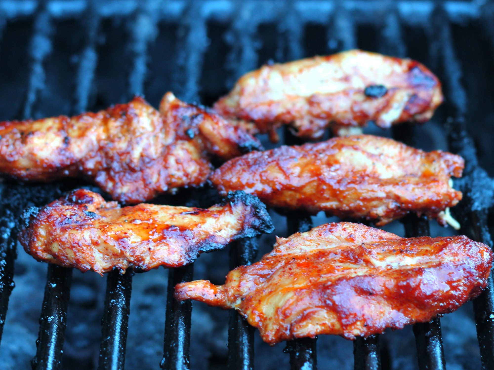

Easy Chicken Fajita Marinade

Description
Ingredients
- ½ cup vegetable oil
- 2 tablespoons chili powder
- 2 tablespoons lime juice
- 2 tablespoons honey
- 2 tablespoons garlic powder
- ½ teaspoon paprika
- ½ teaspoon ground black pepper
- 3 pounds skinless, boneless chicken breasts, cut into strips
Steps
- Whisk vegetable oil, chili powder, lime juice, honey, garlic powder, paprika, and black pepper together in a medium bowl until well combined.
- Place chicken strips in a large resealable plastic bag. Pour in marinade and knead to coat; squeeze out excess air, seal bag, and marinate in the refrigerator for 4 hours to overnight.
- Preheat an outdoor grill for medium-high heat and lightly oil the grate.
- Remove chicken strips from marinade; discard any unused marinade.
- Cook chicken on the preheated grill until browned on all sides and chicken is no longer pink in the center, about 10 minutes per side. An instant-read meat thermometer inserted into the thickest piece should read at least 160 degrees F (70 degrees C).
This simple chicken fajita marinade has been bounced around in my family for at least 15 years. It's tasty, easily altered for a twist on the taste, and can be easily prepared in under 15 minutes. Serve with other fajita elements such as sautéed green bell pepper, white or yellow onions, jalapeño slaw, homemade tomato or mango salsa, etc.